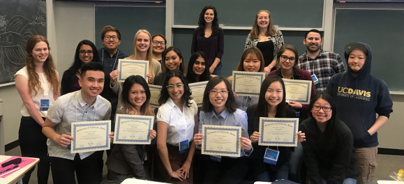

TEACHING
Biodiversity of Fishes series (EVE 198)
Spring 2016 - Spring 2018
Through an NSF grant acquired by Peter Wainwright and Samantha Price, I helped to develop curriculum for and instruct a research-based course series for two consecutive cohorts of undergraduate students (2016-2018). This course series consisted of 1 hour weekly sessions focused on leading the undergraduate researchers through the scientific process, from hypothesis generation to a fully-formed research project over the period of four quarters.
Biodiversity of Fishes I (Spring)
In the first installment of the series, students get hands-on experience with fish specimens, learning about teleost phylogenetics, anatomy, and how to collect morphometric measurements on body shape. This course takes a strong evolutionary perspective on the fish tree of life, encouraging students to pay particular attention to major morphological and ecological evolutionary patterns.
Biodiversity of Fishes II (Fall)
A continuation of the previous course, focused on developing a research question and hypothesis to pursue as a class. This course covers basic research skills such as bibliographic searching, interpreting scientific papers, and discussions of how to develop and critique a scientific hypothesis. Towards the end of the course, the students participate in a series of in-class debates, allowing them to exercise their newfound critical evaluation skills and decide on a novel project and set of predictions to pursue throughout the year.
Biodiversity of Fishes III (Winter)
This quarter focuses on implementing and critically evaluating the findings for their macroevolutionary research question developed in the previous class. Students learn how to write code in R, visualize their data, and implement and interpret statistical analyses specifically pertaining to their research project. R skills include phylogenetically-correcting morphological data, mapping traits on phylogenies, and phylogenetic generalized least squares.
Biodiversity of Fishes IV (Spring)
The last installment of the series focuses on finalizing the results of their projects and learning new presentation skills. This course culminates in the students sharing their research in either a poster or oral presentation at the UC Davis Undergraduate Research Symposium.

Evolution and Ecology (BIS 2B)
Spring 2018
An introductory-level undergraduate course at UC Davis, covering broad topics in biology from the cellular level to speciation and organismal ecology. I was specifically responsible for facilitating and lecturing in the hand-on laboratory sections of this course as well as administering examinations. Laboratory exercises included measuring functional diversity across plants, using fruit flies as model organisms to explore population genetics, and studying succession in a marine fouling community.
Biology of Fishes (FISH 311)
Winter 2009 & 2010
As an undergraduate at University of Washington, I was tasked with developing curriculum and teaching the laboratory portion of an upper-division course focused on the evolution, biodiversity, and morphology of fishes. In this hands-on laboratory students were exposed to fish anatomy, physiology, taxonomy, and functional morphology through numerous dissections and exploration of specimens in the university’s museum collection. These labs also had a large evolutionary component, covering basic introduction to phylogenies and the study of character evolution, as well as systematics of all fishes.